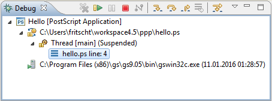
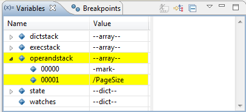

The cursor jumps to the procedure and selects this token.
The Debug View allows you to manage the debugging or running of a program in the workbench. It displays the stack frame for the suspended threads for each target you are debugging. Each thread in your program appears as a node in the tree. It displays the process for each target you are running.
If the thread is suspended, its stack frames are shown as child elements.
Because PostScript is a single-threaded language, you see only one thread. And because PostScript has an execution-model very different from other languages (like Java or C/C++), their concept of stack frames doesn't really fit here, and hence you see only one stack frame. However, you can inspect the stacks in the Variables View.
| Command | Name | Description |
|---|---|---|
| Resume | Resumes a suspended thread. | |
| Step Into | Steps into the highlighted token. | |
| Step Over | Steps over the highlighted token. Execution will continue at
the next token either in the same procedure or (if you are at the
end of a procedure) it will continue in the procedure from which the
current procedure was called. The cursor jumps to the procedure and selects this token. |
|
| Step Return | Steps out of the current procedure. This option stops execution after exiting the current procedure. | |
| Terminate | Terminates the selected debug target. |
The Postscript Editor View displays the PostScript file.
Breakpoints are displayed in the left ruler. Enabled breakpoints are
marked by blue circles [  ], and disabled breakpoints by white circles [
], and disabled breakpoints by white circles [  ].
].
If execution is suspended, the current line is marked by a blue arrow
[  ] in the left ruler, and the current token is highlighted.
] in the left ruler, and the current token is highlighted.
| Command | Name | Description |
|---|---|---|
| Toggle Breakpoint | Toggles the breakpoint selected in the ruler. | |
| Enable Breakpoint | Enables the breakpoint selected in the ruler. | |
| Disable Breakpoint | Disables the breakpoint selected in the ruler. |
| Command | Name | Description |
|---|---|---|
| Run to Line | If execution is suspended, resumes and runs until the line of the cursor position is reached. |
The Variables View displays information about the variables associated with the stack frame selected in the Debug View. You can expand the stacks and the state of the PostScript interpreter. Variables changed since the previous step are displayed in highlight color.
The Breakpoints View lists all the breakpoints you currently have set in your workspace.
You can double-click a breakpoint to display its location in the editor. You can also enable or disable breakpoints, or delete them.